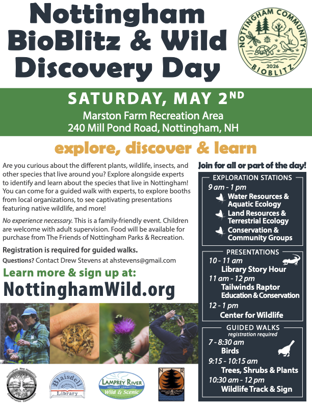

What's a BioBlitz?
A BioBlitz is a communal effort to identify as many species as possible (plants, animals, fungi, lichen and more) within a designated area over a short, set period. It combines scientific surveying with public education, connecting people to local nature while collecting valuable, real-time data for biodiversity research.
Learn More
- iNaturalist App Tutorial
- Merlin Bird ID App
- Wildlife Species in NH
- NH State Wildlife Action Plan
- NH Reptile & Amphibian Reporting
- NH Licensed Wildlife Rehabilitators List
- Pawtuckaway Lake Improvement Association
- Piscataqua Region Estuaries Partnership
- Pollinator Pathways NH
- NH Audubon
- Rockingham County Conservation District
- Southeast Land Trust
- Bear-Paw Regional Greenways
- The Harris Center for Conservation Education
BioBlitz Resources
Click the image below to download a PDF flyer for the Nottingham Community BioBlitz & Wild Discovery Day 2026.

Sponsored By
-

Lamprey River Advisory Committee
The Lamprey River Advisory Committee (LRAC) helps communities protect and enjoy the Lamprey River through resource protection, research, and outreach.
-

Open World Explorers
Open World Explorers provides birdwatching trips and classes, nature tours, and interactive presentations from Greater Boston to Northern New England.
-

West Environmental, Inc.
Mark West has been working in the field of Wetland Science for over 25 years and has mapped and evaluated thousands of wetlands in New Hampshire, Maine and Massachusetts. He has a broad range of ecological experience with plant community and wildlife identification.